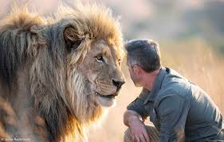
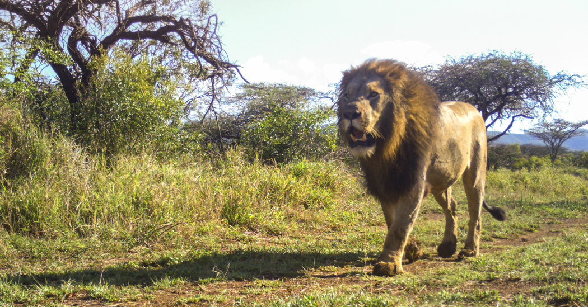

The lion is a large cat of the genus Panthera native to Africa and India. It has a muscular, deep-chested
body,
short, rounded head, round ears, and a hairy tuft at the end of its tail. It is sexually dimorphic; adult
male
lions are larger than females and have a prominent mane.

The lion is a large cat of the genus Panthera native to Africa and India. It has a muscular, deep-chested body,
short, rounded head, round ears, and a hairy tuft at the end of its tail. It is sexually dimorphic; adult male
lions are larger than females and have a prominent mane.

The lion is a large cat of the genus Panthera native to Africa and India. It has a muscular, deep-chested body,
short, rounded head, round ears, and a hairy tuft at the end of its tail. It is sexually dimorphic; adult male
lions are larger than females and have a prominent mane.